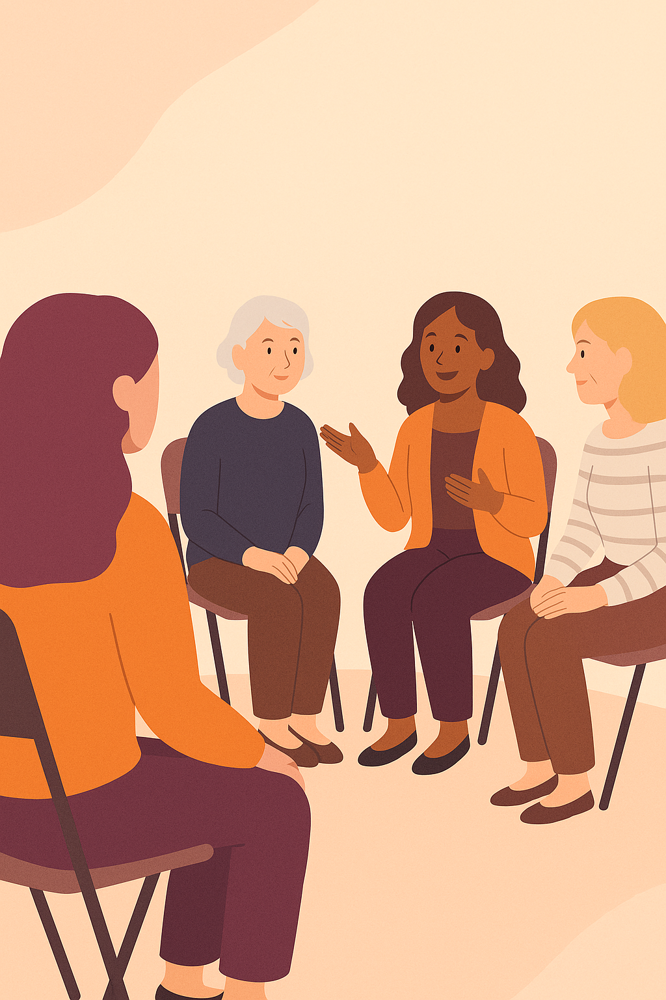

Prevalencia
En Argentina, 1 de cada 6 parejas (≈15%) atraviesa infertilidad. Globalmente, la OMS estima ~17,5% de la población adulta.
En Argentina, 1 de cada 6 parejas atraviesa infertilidad. En SGM+ creamos espacios seguros para transitar tratamientos, procesar emociones y sostener la continuidad terapéutica con una red que acompaña.
Desde 2017 · +1.000 personas acompañadas · Comunidad No Pausa: +200.000 mujeres
+1.000
2017
Presencial y online
4,9/5
SGM+ es un dispositivo de acompañamiento diseñado para atravesar la infertilidad y otras transiciones vitales con escucha, validación y pertenencia. Nuestros grupos son pequeños, íntimos y están coordinados por psicólogas especializadas.
Trabajamos con pacientes, empresas y profesionales para que el bienestar individual se traduzca en bienestar social: entornos de trabajo más cuidados, personas más contenidas y equipos más sanos.
Los tratamientos de reproducción asistida suelen implicar altos niveles de estrés y pueden afectar la adherencia terapéutica. El acompañamiento psicológico grupal mejora el bienestar y favorece la continuidad de los tratamientos.
En Argentina, 1 de cada 6 parejas (≈15%) atraviesa infertilidad. Globalmente, la OMS estima ~17,5% de la población adulta.
En nuestro estudio (2025), 73,8% reportó haber continuado con los tratamientos gracias al sostén del grupo. El 89,3% refirió alivio emocional tras asistir.
Compartir con pares reduce soledad y estigma, y crea espacios de validación que fortalecen recursos emocionales.
Fuente: compilación SGM+ a partir de literatura y evidencia interna 2025.
Hablar de fertilidad también es hablar de lugares de trabajo. Las políticas de cuidado reducen ausentismo y presentismo, mejoran la productividad y fortalecen la cultura de inclusión.
Campañas y comunicación interna/externa libres de estigma.
Capacitaciones (webinars, e-learnings, videos) para RR.HH., líderes, equipos y embajadores.
Políticas ad‑hoc y tercerización del apoyo emocional (grupal e individual).
Formación y recursos para psicología perinatal y salud mental reproductiva. Certificados, supervisión y actualización basada en evidencia.
Programas modulares, talleres prácticos y bibliografía curada.
Espacios de supervisión clínica individual y grupal con especialistas.
Kits de intervención, guías de grupos y protocolos de derivación.
Historias reales de mujeres que encontraron apoyo, claridad y compañía en SGM+.

Conectá, aprendé y sentite acompañada. Material descargable y seguimiento.
Inscripciones abiertas hasta:
Todo lo que necesitás saber para empezar.
Son espacios de 90 minutos, con cupos reducidos y coordinación de psicólogas especializadas. Son confidenciales y sin juicios.
Sí. Ofrecemos acompañamiento individual para profundizar en temas personales y complementar el trabajo grupal.
Sí. Podés participar desde cualquier lugar. Algunas actividades cuentan con grabaciones.
Implementamos programas de bienestar, capacitaciones y políticas ad‑hoc para reducir ausentismo y presentismo.
Escribinos por WhatsApp o completá el formulario. Te compartimos agenda y próximos grupos.
Contanos en qué te podemos acompañar. Te respondemos a la brevedad.
lorenalaserre@gmail.com
+54 9 11 6507-9540
CABA (presencial) · Online para todo el país